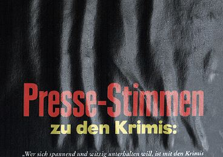
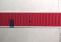
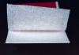

ABHEBEN DER KARTONDECKE
|
Beim Abheben der Kartondecke handelt es sich um
eine Spaltung der Karton-Deckschicht während
des Durchlaufs durch die Druckmaschine. Die oberste
Kartonschicht hebt sich dabei partiell oder auch
ganzflächig vom Kartongefüge ab
(Abb. 1).
|

|
Abb. 1: Abheben der Kartondecke.
|
|
|
|
Mögliche Ursachen:
|
|
|
|
Abb. 2: Abheben der Kartondecke im
Auflagendruck.
|
|
|
|

|
|
Abb. 3: Ergebnis des Probedruckes.
|
|
|
|

|
|
Abb. 4: Vergrößerter Ausschnitt der -
nach dem Probedruck - manuell abgelösten
Kartonschicht.
|
|
|
|

|
|
|
|
|
|

|
|
|
|
|
|

|
|
|
|
|
|

|
|
|
|
|
|

|
|
|
|
|
|
|
Die Gefügefestigkeit des Kartons - also die
Lagenfestigkeit bzw. Spaltfestigkeit - hat einen
entscheidenden Einfluss auf das Abheben der Kartondecke.
Für die Gefügefestigkeit gibt es aus früheren
Untersuchungen der FOGRA einen empfohlenen Mindestwert
für Umschlagmaterialien von 100 N. Die zu
verdruckenden Kartonsorten sollten also eine Spaltfestigkeit
von >100 N aufweisen, um kartonbedingtes Abheben der
Deckschicht vermeiden zu können (Prüfung nach DIN
54516).
Die Viskosität der Druckfarbe hat generell ebenfalls
einen großen Einfluss auf das Abheben der Kartondecke.
Ist die Druckfarbe oder die Druckmaschine z. B. noch zu
kalt, so ist die Viskosität der Druckfarbe noch zu hoch
und demnach auch die auf die Kartonoberfläche wirkende
Zugkraft.
Der in der Druckmaschine herrschende Anpressdruck hat
weiterhin einen Einfluss auf das Abheben der Kartondecke.
Bei zu hohem Anpressdruck ist die Belastung auf die
Kartonoberfläche zu hoch und kann das Spalten der
Kartondecke hervorrufen.
Die Drucktuchzurichtung bzw. die Beschaffenheit des
Drucktuches stellen weitere negative Einflüsse dar. Bei
unzureichender Drucktuchzurichtung können
Walkkräfte auftreten, es entstehen Abwicklungsprobleme
und die Beanspruchung auf die Kartonoberfläche wird zu
hoch bzw. ungleichmäßig. Mit zunehmendem Alter
des Drucktuchs bzw. durch den Einsatz von sich
ungünstig verhaltenden Reinigungsmitteln nimmt die
Klebrigkeit der Drucktücher zu. Durch die Klebrigkeit
des Drucktuchs wird die Beanspruchung auf die
Kartonoberfläche zu hoch.
Eine übermäßig hohe Druckgeschwindigkeit
kann ebenfalls eine zu hohe Beanspruchung der
Kartonoberfläche bewirken.
|
Mögliche Abhilfen:
|
|
Druckgeschwindigkeit auf ein akzeptierbares Maß
reduzieren.
Druckbeistellung prüfen.
Bei kartonbedingtem Abheben Wechsel auf eine
Alternativqualität vornehmen und/oder die
Druckbeistellung größtmöglich
reduzieren.
Eventuell die Viskosität der Druckfarbe reduzieren.
Von der Planung der Druckaufträge her
berücksichtigen, dass die Druckjobs mit Karton als
Bedruckstoff erst dann gedruckt werden, wenn
gewährleistet ist, dass die Druckmaschine normale
Betriebstemperatur hat.
Zustand der Drucktücher und die Aufzugsstärke
regelmäßig kontrollieren.
Generell sollten nur Reinigungsmittel eingesetzt werden, die
von der FOGRA zertifiziert wurden. Ist dies nicht der Fall,
können übermäßige Drucktuchquellung und
Schäden an Dichtungen und Schläuchen der
Druckmaschine auftreten. Die Druckmaschinenhersteller
übernehmen bei Einsatz von nicht zertifizierten
Reinigungsmitteln keine Garantie für aufgetretene
Schäden an der Druckmaschine.
|
Beispiel(e):
|
|
Partielles Abheben der Kartondecke:
Beim Bedrucken eines einseitig gestrichenen Kartons im
Bogenoffset trat ein partielles Abheben der Kartondecke auf
(Abb. 2). Trotz Optimierung der Einstellungen an der
Druckmaschine konnte die Auflage nicht fehlerfrei gedruckt
werden. Die einzige zum Erfolg führende Maßnahme
war eine drastische Reduzierung der Druckgeschwindigkeit auf
4.500 Bg/h. Dieser Schritt war jedoch für den
Druckereibesitzer nicht zufriedenstellend, da aufgrund der
hohen Auflagenzahl mit zeitlich erheblichem Mehraufwand zu
rechnen war. Da in absehbarer Zeit keine Ersatzqualität
für den Karton zur Verfügung gestellt werden
konnte, musste jedoch mit der reduzierten
Druckgeschwindigkeit produziert werden. Der Kartonhersteller
lehnte die vom Drucker geforderten Mehrkosten ab, da man der
Meinung war, die Produktionsdaten des Kartons lägen im
üblichen Rahmen.
Zur Ursachenklärung wurde der FOGRA dieser Schadensfall
übergeben.
Im ersten Untersuchungsschritt erfolgte die Prüfung der
Spaltfestigkeit des Kartons. Die Werte für diese
Untersuchung lagen mit 107 N im „Grenzbereich“. Im
nächsten Schritt wurde die Bedruckbarkeit im
Probedruckgerät (System prüfbau) untersucht.
Hierbei zeigte sich an der gestrichenen Seite unter
Standardprüfbedingungen (Rupftestfarbe Nr. 2, 200 N/cm
Liniendruck, 1,5 m/s Druckgeschwindigkeit) eine deutliche,
kartonbedingte Tendenz zum Abheben der Kartondecke (Abb. 3
und 4). Nach diesen Ergebnissen musste die Reklamation mit
einem kartonbedingten Mangel begründet werden.
Der Kartonhersteller erstattete dem Drucker die entstandenen
Mehrkosten.
|
Allgemeine Hinweise:
|
|
Für den Reklamationsfall:
Druckausfallmuster sicherstellen.
Unbedruckte Kartonmuster und unbedruckte Vergleichsmuster
sicherstellen (ca. 20 Blatt DIN A4). An diesen Mustern
können im Labor vergleichende
Spaltfestigkeitsprüfungen und Probedrucke mit
Labor-Probedruckgeräten vorgenommen werden.
Produktionsdaten protokollieren.
Ergänzende Literatur:
KIRMEIER, M.:
Da hebt er ab...
In: Druckwelt 12, 1994 (S. 83)
WALENSKI, W.:
Rupfen im Offsetdruck. Tipps und Tricks oder wie man dem
Rupfen im Offsetdruck beikommen kann.
In: Offsettechnik, Nr. 10, 1988 (S. 32)
|
|
|
|
|
|
|
Kontakt:
wimmerm@fogra.org
|
Abh-mw-200112
|